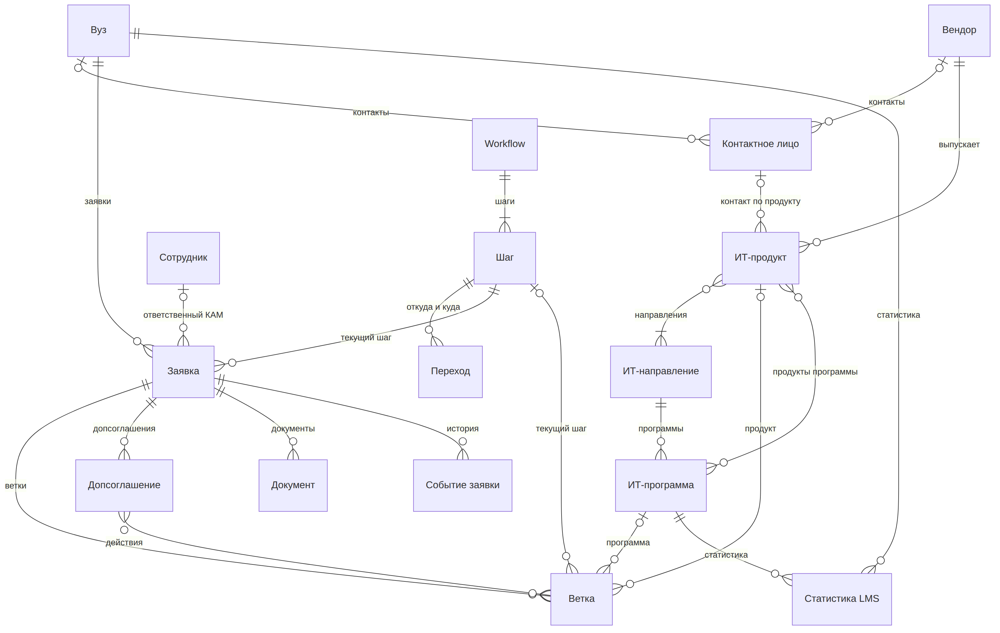

Модель данных
Принципы
• Каталоги хранятся в БД; администратор загружает их из xls/xlsx по маппингу колонок, с предпросмотром. • Заявка хранит ссылку на шаг, а не копию маршрута, - версий маршрута нет. • История не удаляется: шаги уходят в архив, заявки и ветки закрываются, документы получают новые версии. Исключения: неподписанную заявку, которая ни разу не стояла на шаге, можно отменить (раздел 4.4); ошибочно прикреплённый файл удаляет администратор с записью в журнал действий. • Вуз уникален по «ИНН + КПП», а не по названию: повторная загрузка справочника вузов не плодит дублей, филиал со своим договором является в нашей системе отдельным вузом. • Персональных данных должно быть минимум; ФИО, телефон и email контактов шифруются.
Схема

Не показаны: запрос на решение, данные шага, специальность, сопоставление курса, запись на обучение с сайта, журнал действий, справочники видов документов и причин закрытия.
Сущности
| Сущность | Зачем | Ключевые поля | Главное правило |
|---|---|---|---|
| Каталоги | |||
| Вуз | Сторона договора | название (полное, краткое), ИНН, КПП, регион, город |
Уникален по «ИНН + КПП» |
| Контактное лицо |
Люди вуза и вендора | владелец, ФИО, телефон, email, актуален |
Владелец - вуз или вендор; ФИО, телефон, email зашифрованы |
| Вендор | Поставщик продукта | название | У продуктов Ростелекома - «ПАО «Ростелеком»» |
| ИТ- направление |
Область обучения | название | Крупные категории edu-rt, мельче не дробим |
| ИТ-программа | Методические материалы, они её ранжируют |
название, направление, продукты, ручной приоритет, ID курса на сайте и в LMS |
самая востребованная выявляется по приоритету 1 |
| ИТ-продукт | ПО для обучения | название, вендор, направления, контакт вендора, активен |
Неактивный не попадает в новые ветки |
| Специальность | Подсказка руководителю на шаге 0 |
код ОКСО, название, уровень, теги навыков |
На заявку не влияет |
| Сотрудники | |||
| Сотрудник | КАМ, руководитель, администратор |
роль, ID в Keycloak, ФИО, рабочий email; у КАМа это руководитель, лимит заявок и статус доступности; у руководителя это лимит команды |
ФИО не шифруется: служебные данные |
| Маршрут | |||
| Workflow | Маршрут, для вузов он один - B2B |
название, опубликован | Правки опубликованного сразу действуют на все заявки; B2C описан в разделе 14 |
| Шаг | Шаг маршрута | название, порядок, уровень (заявка / ветка), поля шага, в архиве |
Удалённый шаг уходит в архив |
| Переход | Разрешённый путь между шагами |
откуда и куда, возврат, нужно одобрение, шаг при отказе, нужные документы |
Двигаться можно только по переходам |
| Работа с вузом |
|||
| Заявка | Работа с вузом по договору; шаги с 1 по 4 |
вуз, ответственный КАМ, текущий шаг, состояние, текущее допсоглашение |
У вуза может быть только одна незакрытая заявка |
| Ветка | Программа и продукт в договоре; шаги 5–8 |
программа, продукт, текущий шаг, лицензия, статус по передаче |
Свои шаг, лицензия, пауза и закрытие |
| Допсоглашение | Изменение договора, шаг 4.1 |
номер, дата, скан, статус, действия | может быть только одно неодобренное. Начинает действовать после одобрения |
| Документ | Файл на шаге | вид, файл, ключ в хранилище, предыдущая версия, номер договора |
Старые версии не удаляются |
| Событие заявки | История заявки и веток |
тип (переход, возврат, комментарий, пауза и снятие, закрытие, переоткрытие, старт и возобновление ветки, ветка добавлена или убрана, допсоглашение открыто, одобрено, отклонено или отменено, продление, перенос, импорт), с шага на шаг, комментарий, автор, время |
По событиям считается статус на конец периода |
| Запрос на решение |
Ждёт решения руководителя |
тип, заявка или ветка, кто запросил, статус, кто решил |
Запрос из LMS может быть без заявки |
| Данные шага | Поля, настроенные на шаге |
заявка, ветка, шаг, значения полей | Правка пройденного шага только с одобрения |
| Интеграции | |||
| Статистика LMS |
Данные обучения из LMS |
вуз, программа, студенты, потоки, обучено преподавателей |
Если нет ветки значит запрос руководителю |
| Сопоставление курса |
Актуализация программы |
курс у источника, программа, статус записи |
Администратор сопоставляет только ключи |
| Запись на обучение с сайта |
Запись человека на курс |
номер заказа, программа, поток, дата, отпечаток email |
ФИО, телефон и email не хранятся |
• Журнал действий видит только администратор; ФИО, телефон и email сотрудников и контактов в журнал не пишутся. • Ключи обмена: LMS получает внутренние ID вуза и программы; запасные ключи - «ИНН + КПП» и ID курса. • В прототипе есть всё из таблицы. Обучающиеся и логика B2C - этап 2, раздел 14.
Главные правила связей
- Одна заявка = один договор. У вуза может быть только одна незакрытая заявка, поэтому одновременно действует один договор. Изменения после подписания договора может происходить только допсоглашением.
- У вуза не может быть больше одной незакрытой заявки.
- Ветка = одна программа + не больше одного продукта этой программы.
- У продукта ровно один вендор и минимум одно направление.
- Программа это ровно одно направление, продукт необязателен; направление ветки берётся из программы.
- Статистика LMS это одна запись на пару «вуз × программа», общая для всех её веток.
10 полей каталога ТЗ
Строка каталога это пара «вуз × продукт», поэтому импорт раскладывает её по нескольким сущностям.
Лицензия и передача это явные поля ветки, а не данные шага: поле шага можно переименовать, и если бы они были данными - сломались бы отчёты, импорт и JSON.
Программы среди 10 полей нет, у импортированной ветки она пуста до уточнения.
Импорт. Вуз, вендор и продукт должны уже быть в справочниках, а строка находит их по названию. Строка без договора создаёт заявку для КАМа, с договором - создает подписанную заявку с веткой на шаге 5 или 6 (раздел 4.1). Два номера договора у одного вуза - это ошибка. Повторный импорт договорные данные не перезаписывает.
| Поле ТЗ | Где хранится | Почему |
|---|---|---|
| Название ВУЗа | Вуз | Ссылка на каталог вместо текста без разнобоя в отчётах |
| Вендор | Вендор, через продукт | Свойство продукта: в одном договоре бывают разные вендоры |
| ПО | ИТ-продукт, с вузом - через ветку | Продукт общий для всех вузов |
| Номер договора | Документ вида «договор» | У заявки один договор, продукты входят в него |
| Подписание лицензии | Ветка: дата | Лицензия у каждой ветки своя |
| Срок действия лицензии (год) |
Ветка: число лет | Сроки внутри договора разные, продлеваются допсоглашением |
| Статус по передаче | Ветка: «Передано» / «Не передано» |
Передача идёт по каждой ветке отдельно |
| ФИО Менеджера | Сотрудник - ответственный КАМ заявки |
От него зависят права и фильтры |
| Ответственные от ВУЗа | Контактное лицо вуза | Их может быть несколько, это ПДн |
| Комментарий | Событие «комментарий» у ветки | Все комментарии в истории, с автором и датой |
Файлы
• Файлы хранятся в S3 отдельно от БД; в БД, а описание файла и ключ в хранилище. • Новая версия не заменяет старую: прежняя остаётся со статусом «устарел». • Форматы: png, jpeg, pdf, zip, gzip, rar, doc, docx, xls, xlsx и pptx для презентаций. • С физическими схемами базы данных можно ознакомиться в Приложении 1